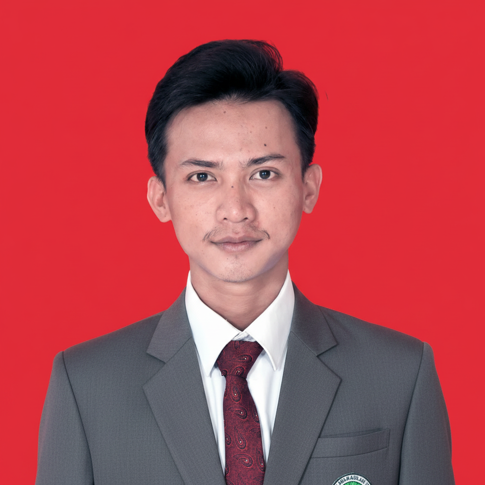

📖
Al-Qur'an & Tafsir
Kajian dan pemahaman ayat-ayat Al-Qur'an dalam perspektif pendidikan dan kehidupan.
Arya Humaidi Abdillah — mahasiswa Pascasarjana Pendidikan Agama Islam, santri, dan Islamic Education enthusiast yang tertarik pada kajian keislaman, penelitian, pengajaran, serta media pembelajaran digital.

Identitas yang mempertemukan tradisi keilmuan pesantren dengan kebutuhan pendidikan dan akademik modern.
Saya adalah mahasiswa Pascasarjana Pendidikan Agama Islam yang juga tumbuh dalam lingkungan pesantren. Ketertarikan saya berada pada pendidikan Islam, kajian keislaman, penelitian pendidikan, serta bagaimana khazanah keilmuan Islam dapat berdialog dengan perkembangan ilmu pengetahuan dan teknologi.
Portofolio ini menjadi ruang untuk mendokumentasikan proses belajar, mengajar, meneliti, dan berkarya.
Kompetensi keislaman, akademik, pendidikan, dan digital dalam satu ekosistem.
Kajian Al-Qur'an, Hadis, dan khazanah kitab kuning yang menjadi bagian dari perjalanan keilmuan.
Kajian dan pemahaman ayat-ayat Al-Qur'an dalam perspektif pendidikan dan kehidupan.
Studi hadis dan relevansinya dengan pendidikan Islam serta pembentukan nilai peserta didik.
Eksplorasi khazanah keilmuan klasik dan dialognya dengan konteks pendidikan modern.
Dokumentasi proyek akademik, bahan ajar, penelitian, dan karya pendidikan yang telah dikerjakan.
Bahan ajar presentasi tentang hubungan ilmu pengetahuan dengan pembelajaran Al-Qur'an dan Hadis dalam konteks PAI.
Eksplorasi presentasi dan media pembelajaran digital untuk membuat materi PAI lebih terstruktur dan komunikatif.
Pengalaman mengajar menjadi ruang untuk menerapkan ilmu dan belajar memahami kebutuhan peserta didik.
Pembelajaran Al-Qur'an, Hadis, Fikih, Akidah Akhlak, dan kajian keislaman sesuai kebutuhan peserta didik.
Pengembangan bahan ajar berbasis presentasi dan media digital menggunakan PowerPoint, Canva, CapCut, serta AI Tools.
Mengajar mata pelajaran Al-Qur'an Hadis pada tingkat Madrasah Aliyah dengan fokus pada penyampaian materi keislaman, pengelolaan pembelajaran, dan pembimbingan peserta didik.
Tulisan dan karya akademik yang berkaitan dengan Pendidikan Agama Islam, kajian keislaman, dan pendidikan.
Materi akademik yang mengeksplorasi integrasi sains dalam pembelajaran Al-Qur'an dan Hadis.
Lihat Project →Kumpulan tulisan dan karya akademik dalam bidang Pendidikan Agama Islam dan kajian keislaman.
Lihat tulisan →“Memelihara tradisi lama yang baik dan mengambil hal baru yang lebih baik.” Sebuah prinsip untuk mempertemukan khazanah klasik dengan kebutuhan pendidikan kontemporer.
Perjalanan pendidikan dan pengembangan kompetensi dalam bidang Pendidikan Agama Islam.
Program Pascasarjana — Universitas Islam Tribakti Lirboyo Kediri.
MA Al-Mahrusiyyah — pengalaman mengajar selama 1 bulan.
Pengembangan kompetensi penelitian, penulisan akademik, dan critical thinking.
PowerPoint, Canva, CapCut, Mendeley, dan AI Tools.